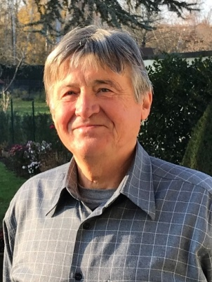

"Ich möchte noch mehr GRÜN und ein gutes Leben für alle im
Ortsbezirk 7! Ich will Orte, an denen wir uns begegnen
können und gerne aufhalten – auch als Menschen zu Fuß und
auf dem Rad. Das gilt für unsere Straßen und in unseren
Parks und an der Nidda. Auch muss klar sein: In unserem
Ortsbezirk haben wir keinen Platz für Hass, Hetze und
Rassismus!"
Johannes Lauterwald
Listenplatz 2, Student, Jg. 1997
Klimaschutz und Wohnungspolitik müssen zusammengedacht
werden.
"Klimaschutz und Wohnungspolitik zusammenzudenken muss
auch auf kommunaler Ebene Verpflichtung politischen
Handels sein. Für eine gemeinwohlorientierte Wende der
Wohnungspolitik und eine konsequente Ausrichtung am 1,5
Grad Ziel, um die Klimakrise zu stoppen."
Monika Dickhaus
Listenplatz 3, Lehrerin,
Jg. 1961
(Nicht nur freitags) für die Zukunft!
"Umtreiben tut mich der Klimawandel. Umtreiben tun mich
Menschen, die nur Politikerschelte kennen und nicht sehen,
dass politisches und gesellschaftliche Engagement unsere
Welt zusammenhält. Umtreiben tun mich leblose Ortskerne
und zuasphaltierte Städte, in denen Radfahrer sich mit
einem hohen Adrenalinspiegel schützen müssen. Umtreiben
tut mich auch der Anstieg der AfD-Wähler. Schließlich
treibt mich die Verrohung der Umgangsformen um. Ich will
mich für unseren Ortsbezirk einsetzen, ihn gestalten,
liebens- und lebenswert machen: schöne Aufenthaltsplätze,
gute Einkaufsmöglichkeiten, Solarenergie auf so viele
Dächer wie möglich."
"Für unseren Ortsbezirk setze ich mich für die
Verbesserung von Chancen- und Bildungsgerechtigkeit für
alle Kinder, der Ausbau einer nachhaltigen
Verkehrsinfrastruktur sowie die praktische Umsetzung von
Klimaschutzmaßnahmen ein."
Britta Schulte-Hahn
Listenplatz 5, Kardiologin, Jg. 1959
Ich stehe für das Ziel eines klimaneutralen, weltoffenen
und toleranten Frankfurts, in dem wir auch in vielen
Jahren noch gerne und gut leben können.
"Ich wünsche mir weniger CO2-Ausstoß durch
Elektrifizierung des öffentlichen und Individual-Verkehrs,
Förderung von Fahrradmobilität und Umstellung auf
regenerative Energiegewinnung. Der Erhalt und die
ökologische Weiterentwicklung unserer Grünanlagen ist
wichtig für das Klima der ganzen Stadt. Ich stehe für
Weltoffenheit und Toleranz und wehre mich gegen
Fremdenfeindlichkeit, Rassismus und Intoleranz. "

Hans-Gerhard Nerlich
Listenplatz 6, Rentner, Soziologe und
Wissenschaftlicher Dokumentar, 17 Jahre in der Forschungsförderung,
Jg. 1953
Die soziale und ökologische Orientierung im Ortsbeirat und
bei den Bewohner:innen des Ortsbezirks verstärken.
"Bei den Themen Ausweisung neuer Wohngebiete, Planung und
Gestaltung von Mobilitätswegen und Gestaltung der
Ortskerne der Stadtteile sowie deren Grüngebiete, sollte
die o. a. Orientierung zum Tragen kommen. Dabei sollen
möglichst viele Bewohner:innen einbezogen werden, auch
die, die bislang weniger an gesellschaftlichen Vorgängen
beteiligt sind."
Ortsbezirk für die Bewohner:innen attraktiver machen!
"Als Neu-Rödelheimerin habe ich mich im Stadtteil schnell
wohl gefühlt: Es bestehen Mobilitätsangebote jenseits des
Autos, die aber noch ausgebaut werden müssen. Es gibt
Möglichkeiten zur Naherholung, die es erlauben direkt vor
der Tür ausgedehnte Spaziergänge oder Radtouren in grüner
Umgebung zu unternehmen. In Rödelheim gibt es keinen Platz
für Hass und Hetze, hier soll sich Jede:r wohlfühlen und
nach seinen Wünschen entfalten können. Dafür will ich mich
im Ortsbeirat engagieren!"
Christoph Zanke
Listenplatz 8, Biologe, Jg. 1969
Unsere Stadtteile fit für die Folgen des Klimawandels
machen!
"Ich möchte mich einsetzen für mehr Platz für Menschen und
weniger Platz für Autos, für eine Verbesserung des
bestehenden ÖPNV-Angebots, und für eine bessere Anbindung
von Praunheim. Weiterhin befürworte ich einen autofreien
neuen Stadtteil zwischen Praunheim und der A5, wo die
erste Bahn fährt, bevor der erste Bewohner einzieht. Grün
sollte es nicht nur entlang der Nidda sein, sondern auch
an Fassaden und auf Dächern."
"Der Ortsbezirk ist da, wo wir wohnen. Unsere
Nachbarschaft. Hier fängt Politik an: Anliegen und Wünsche
äußern, Kompromisse finden, sich einigen, abwägen,
Prioritäten setzen. Dazu möchte ich beitragen und mit den
Menschen hier in unserer Nachbarschaft ins Gespräch
kommen. Als Schwerhörige mit Wurzeln von San Francisco bis
Odessa identifiziere ich mich besonders mit Menschen mit
unterschiedlichen Hintergründen."
"Mehr Grün wagen bedeutet mehr Solardächer, mehr Grün für
nachhaltiges Wohnen, mehr sichere Radwege für grüne
Mobilität, mehr nachhaltige Verwendung von Wasser und
Energie, mehr Schutz für grüne Inseln in der Stadt, mehr
bezahlbarer Wohnraum und gute Schulen für alle. Mehr Grün
bedeutet gute Nachbarschaft und Zusammenhalt, keine
Ausgrenzung, kein Hass und kein Rassismus."
"Ich kam 1989 in unseren Stadtteil und wurde 2019
deutscher Staatsbürger. Wachstum in Frankfurt ist eine
Tatsache und notwendig, aber nicht auf Kosten von
Nachhaltigkeit und Lebensqualität für heutige und
zukünftige Generationen.“"
Wir GRÜNE im Ortsbeirat 7 stehen für folgende Themen.
Klimaschutz
Klimaschutz beginnt vor Ort
Auch bei uns vor Ort müssen wir die Klimakrise bekämpfen. Das
Klima muss in jede (politische) Diskussion eingebracht und
mitgedacht werden. Dafür werden wir Sorge tragen. Regenerative
Energiequellen, insbesondere auf öffentlichen Gebäuden, wollen
wir ausbauen (Photovoltaikanlagen, Abwärmenutzung). Wir treiben
die Energiewende und neue Energiekonzepte wie E-Mobilität,
energieeffizientes Bauen und Energiesparen z.B. mit
Energielotsen voran. Fassadenbegrünung und Verschattungen müssen
deutlich ausgebaut werden, vor allem bei Neubauten. Wir stehen
für den Erhalt unserer grünen Oasen, die Stärkung der
Frischluftzufuhr und die sinnvolle Pflege und Gestaltung unserer
natürlichen Wasserreservoirs wie der Nidda.
Verkehr
Für eine menschengerechte Mobilität
Städte wie Freiburg haben es vorgemacht: Schnelle und häufige
Verbindungen mit Bus und Bahn sowie sichere und gut ausgebaute
Fahrradwege führen dazu, dass weniger Menschen das Auto nehmen
oder ganz darauf verzichten. Und damit gewinnen alle: wenn wir
Parkplätze reduzieren können, wird unsere Stadt durch den
gewonnenen Raum grüner und lebenswerter. Deshalb stehen wir für
eine Mobilität, die sich von der autogerechten Stadt
verabschiedet und die Bedürfnisse aller Verkehrsteilnehmer:innen
gleichermaßen berücksichtigt. Wir verfolgen das Ziel, die
Ortskerne unserer Stadtteile, wie z.B. die Radilostraße in
Rödelheim, autofrei zu machen, um damit eine höhere Lebens- und
Aufenthaltsqualität zu schaffen. Außerdem wollen wir den ÖPNV
stärken, indem z. B. zusätzliche S-Bahnen im Berufsverkehr
zwischen Eschborn und der City verkehren. Ebenso fordern wir
eine schnelle Umsetzung der Regionaltangente West, um die
Hauptverkehrsachsen zu entlasten und schnelle
Tangentialverbindungen zu schaffen. Selbstverständlich muss auch
der Radverkehr bei der Verkehrsplanung mitgedacht und ausgebaut
werden. Deshalb haben wir den Frankfurter Radentscheid
unterstützt und setzen uns für die Umsetzung seiner Forderungen
auch in unserem Ortsbezirk ein.
Wohnen
Für bezahlbaren Wohnraum
Wir stehen an der Seite der Mieter:innen, denn alle Menschen
haben Anspruch auf eine bezahlbare Wohnung. Leider können sich
immer weniger Menschen das Wohnen in Frankfurt leisten; die
zunehmende Verdrängung ist auch in unserem Ortsbezirk ein großes
Problem. Wir setzen uns für mehr sozialen Wohnungsbau und die
Umwandlung von Leerstand zu nachhaltiger Nutzung ein. Wir wollen
den Trend zu immer höheren Mieten stoppen. Jetzt ist die Zeit
die Bau-, Wärme- und Energiewende zu vollziehen: einerseits
Gebäude energieeffizient bauen und sanieren, andererseits
wertvolle Biotope und Frischluftschneisen schützen. Das gilt
sowohl bei Nachverdichtung als auch bei Neubaugebieten. In den
kommenden fünf Jahren wird es darauf ankommen, Klimaneutralität
und den Bedarf nach sozialem und bezahlbarem Wohnraum endlich
zusammenzubringen.
Integration & Vielfalt
Alle gehören dazu
Ob französische, deutsche oder japanische Schule. Ob Rödelheimer
Rap oder Rödelheimer Ebbelwei. Ob Pizzeria oder Indisch. Ob
Synagoge, Kirche oder Moschee. Ob rosa in Praunheim oder bunt in
Hausen. Ob geflüchtet, eingeplackt oder eingeboren. Das alles
gehört zu unseren Stadtteilen. Wir alle gehören zu unseren
Stadtteilen und wollen hier ohne Hass und Hetze leben dürfen.
Darin unterstützen wir alle engagierten Bürger:innen, Vereine,
Institutionen und Stadtteilbüros in unserem Ortsbezirk. Wir
möchten weibliche und diverse Vorbilder, zum Beispiel bei der
Straßenbenennung, sichtbar machen und stellen uns gegen
diskriminierende und frauen*verachtende Werbung im Stadtteil.
Bildung
Gleiche Chancen für alle Kinder
Wir fordern Chancengleichheit für alle. Kinder, Eltern und
Lehrende brauchen ein Umfeld, in dem Lernen Spaß macht und
Kinder individuell gefördert werden können. Deshalb setzen wir
uns ein für mehr Betreuungsangebote (Krippe, KiTa, Hort,
Ganztagsschule). Zu dem Umfeld gehören auch Modernisierung der
Schulgebäude, ihrer Sanitäranlagen, die Erweiterung digitaler
Infrastruktur und die Versorgung mit gesundem und regionalem
Essen.
Wirtschaft
Lokal und nachhaltig
Wir unterstützen eine attraktive Vielfalt der lokalen
Wirtschaft, nachhaltige Produktionsprozesse und das lokale
Kleingewerbe und entwickeln damit lebendige Zentren in den
Stadtteilen. Die Einwohner:innen des Ortsbezirks müssen die
Möglichkeit haben, den lokale(n) Einzelhandel, Dienstleistungen,
Gastronomie und das Handwerk in den Stadtteilen zu nutzen. Das
erspart Kosten und Mühen, sichert Arbeitsplätze vor Ort und ist
weniger klimaschädlich. Wochenmärkte und eine regionale
Lebensmittelversorgung möchten wir fördern. Eine Gemüsegärtnerei
im Ortsbezirk wäre toll! Gastronomie und Einzelhandel
profitieren von autofreien Stadtzentren. Mehr Außengastronomie
und die Auslieferung durch Lastenräder fördern den Absatz im
Einzelhandel.
Natur und Umwelt
Frankfurt braucht Naturräume
Solms-, Brentano- und Niddapark sind naturnahe Erholungsräume,
die sich durch hohe Artenvielfalt auszeichnen. Das wollen wir
gerade in Zeiten der Klimakrise erhalten und ausbauen. Wir
fordern daher die zügige Umsetzung der bereits beschlossenen
Renaturierung der Nidda und die Ausweitung der Wildblumenwiesen
im Ortsbezirk. Im urbanen Raum möchten wir durch eine
flächendeckende Straßen- und Platzbegrünung ein angenehmeres
Klima schaffen. Dazu passen keine Vorgärten ohne Grün.
Gaslaternen sollen zeitnah durch nachhaltige
LED-Straßenbeleuchtung ersetzt werden.
Alle fünf Jahre werden die Mitglieder des Ortsbeirates gewählt.
Das ist
Politik vor der eigenen Haustür. Die
gewählten Vertreterinnen treffen sich meist einmal im Monat und
hören den Bürger:innen zu (u.a. in der Bürger:innen-Fragestunde)
und besprechen, was im Bezirk zu tun ist. Sie stellen dem
Frankfurter Magistrat Fragen, geben Anregungen, äußern Wünsche,
machen Vorschläge, beraten. Auch vor Ort können wichtige
Entscheidungen für unser Leben in den Stadtteilen getroffen
werden.
Dich interessiert, wofür BÜNDNIS 90 / DIE GRÜNEN sich in den
letzten Jahren im Ortsbeirat 7 eingesetzt haben?
Hier findest du unsere Anträge.
Komm mit uns ins Gespräch!
Du hast Fragen, willst uns etwas mitteilen oder bei uns mitmachen?
Kontaktiere uns einfach über deinen Lieblingskanal!
Weitere Informationen findest du auf der Webseite unserer
Stadtteilgruppe:
www.gruener7er.de
Wir wissen, dass Sie dem Thema Datenschutz große Bedeutung
beimessen. Deshalb ist uns der Schutz Ihrer persönlichen Daten ein
wichtiges Anliegen.
Persönliche Daten
Persönliche Daten, die Sie uns elektronisch übermitteln, z.B. Ihren
Namen, Postanschrift, E-Mail-Adresse oder andere persönliche
Angaben, werden von uns nur zum jeweils angegebenen Zweck verwendet,
sicher verwahrt und nicht an Dritte weitergegeben. Wir werden Ihnen
nur Informationen zuschicken, sofern Sie sich für entsprechende
Dienste angemeldet haben.
Recht auf Widerruf
Sie haben jederzeit das Recht auf Widerruf; schicken Sie bitte eine
Mail an uns. Wir werden Ihre Daten dann umgehend löschen.
Links zu anderen Websites
Sie finden auf unseren Seiten Links zu anderen Seiten im Internet.
Für alle diese Links und Banner gilt, dass wir keinerlei Einfluss
auf die Gestaltung und die Inhalte der gelinkten Seiten haben.
Deswegen übernehmen wir auch keinerlei Verantwortung für Inhalt,
Gestaltung und die Datenschutzbestimmungen dieser Seiten.

{kind=link}